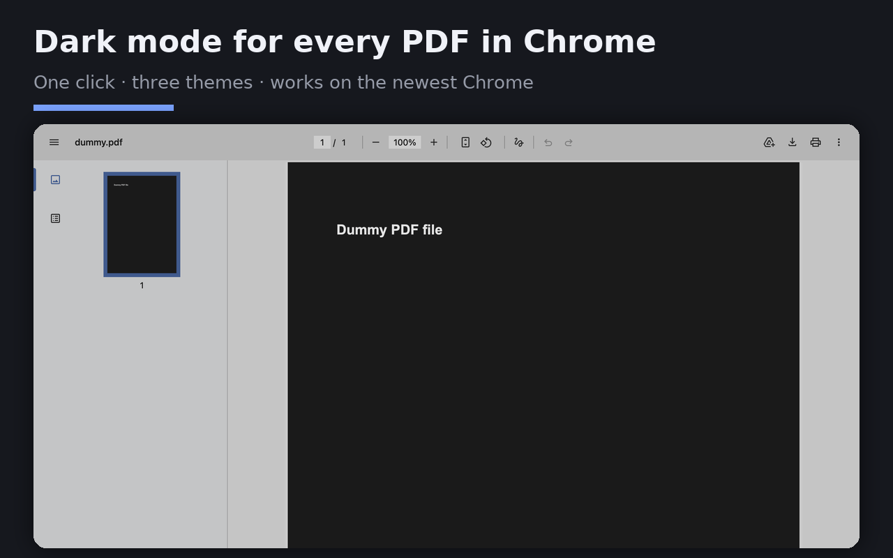
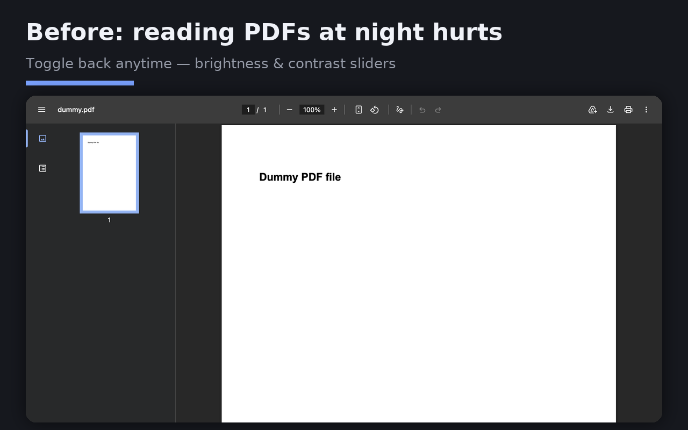

PDF · reading
PDF Dark Mode
One-click dark mode for any PDF in Chrome's built-in viewer — including PDFs opened from the web, not just local files.
No server · no telemetry · no accountThe problem
It is late, you open a PDF, and Chrome hands you a full screen of white paper.
So you install a PDF dark mode extension. The listing tells you to switch on “Allow access to file URLs”, you do that, and nothing happens. The two extensions sitting at the top of the Chrome Web Store results for pdf dark mode both scope themselves to file:///*.pdf in their manifest, so they only ever act on a PDF opened off your own disk. The PDF you were reading came from a URL, like most PDFs do.
What happens when you install this one
Click the toolbar icon while a PDF is open and the page goes dark. Three themes: soft dark (grey page, warm white text), true black for OLED screens, and sepia. A brightness slider adjusts it while you watch. Switch on “auto dark” and every PDF you open afterwards starts dark.
It works on https:// PDFs and file:/// PDFs alike, because it acts on Chrome’s PDF viewer element rather than on the file.


Permissions
/ and why each one is needed- activeTab
- Lets the extension touch the tab you are looking at, and only after you click the toolbar icon. Without a click it has no access to anything.
- scripting
- Needed to inject the CSS filter that darkens the PDF viewer. The injected code is in
shared.jsand reads nothing out of the page. - storage
- Stores your theme choice and brightness slider position in
chrome.storage.local. Local to the browser, never uploaded. - <all_urls> (optional)
- Only requested if you switch on "auto dark", which needs to act on a PDF before you have clicked anything. Leave the switch off and this is never requested. Chrome will show you the prompt; declining leaves the manual toggle fully working.
Nothing here is optional-sounding boilerplate: remove any one of these and the extension stops working. There is no permission requested "for future features".
Install from source
git clone https://github.com/liuhao04/pdf-dark-mode-extension.gitThen open chrome://extensions, switch on Developer mode, choose Load unpacked,
and pick the extension/ folder. That is the same code the Web Store build is made from.
Issues and pull requests are welcome. This is maintained in spare time — answers come when they come, and there is no support commitment attached.